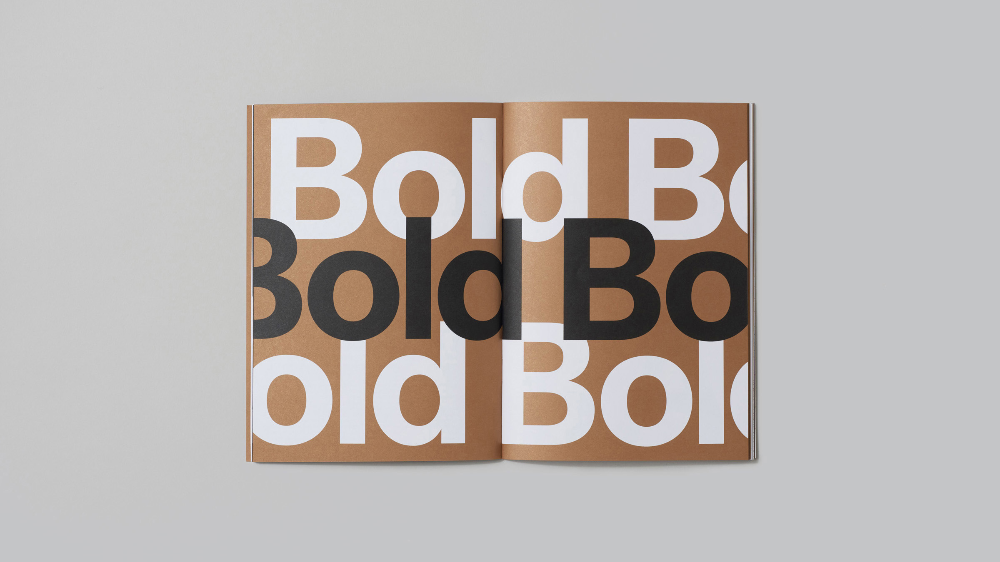
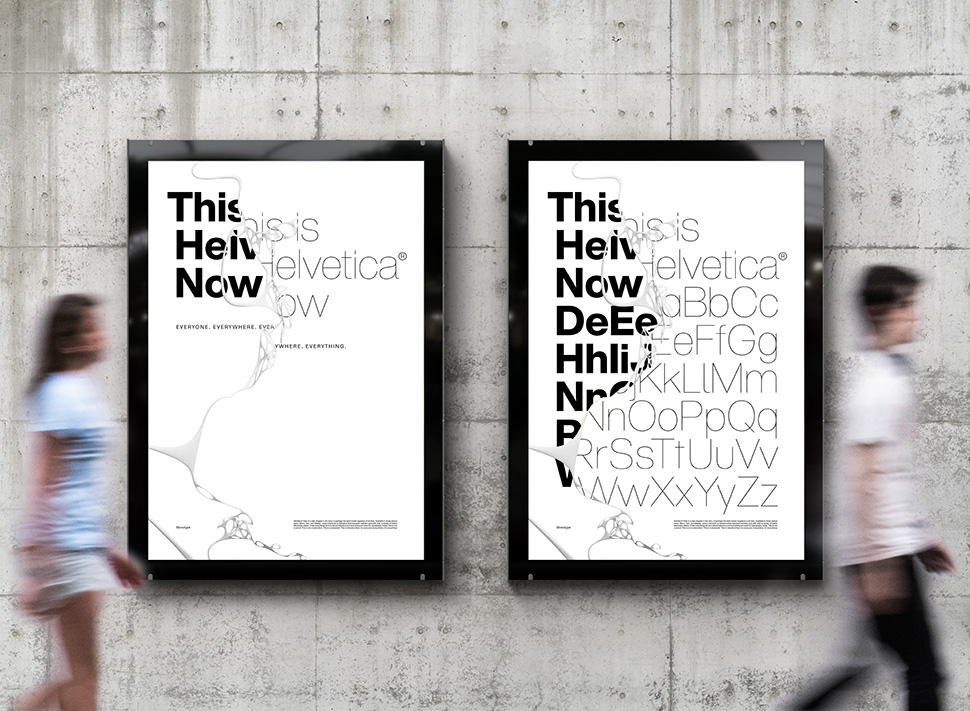
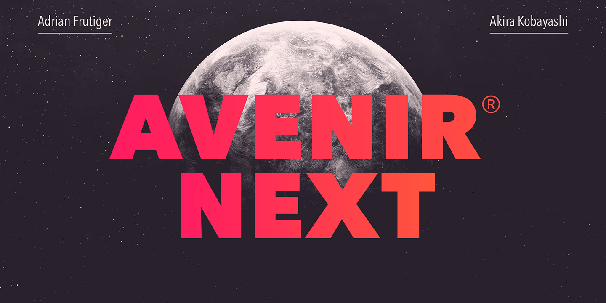
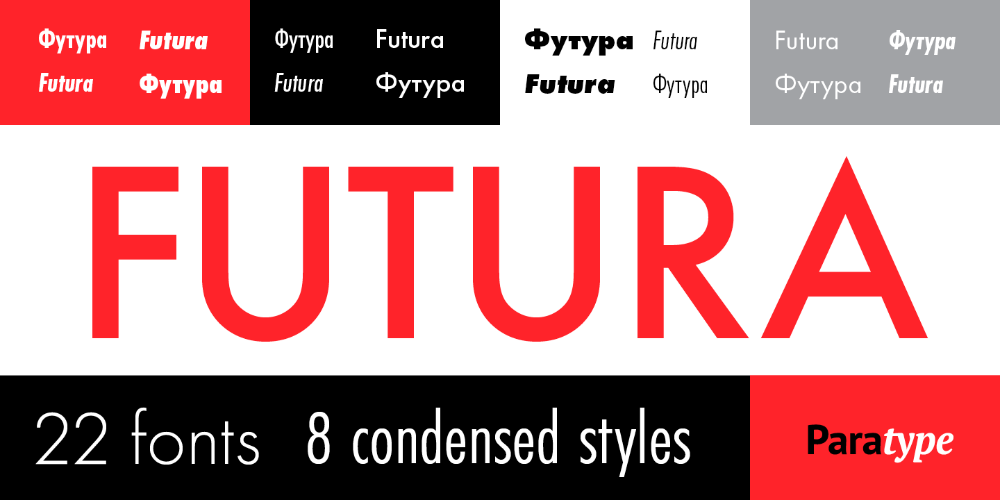
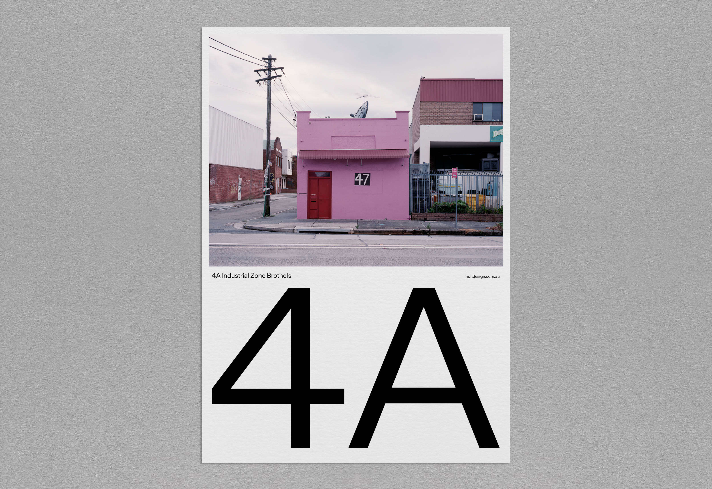
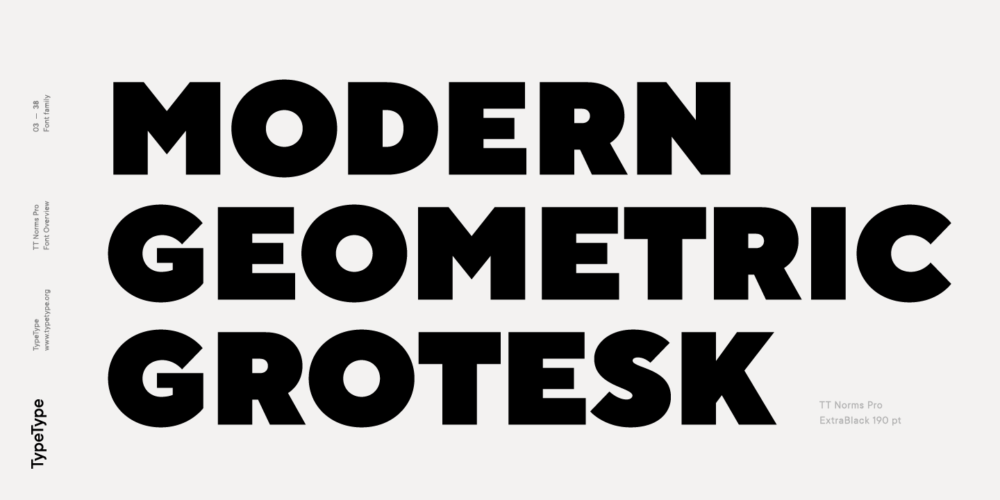
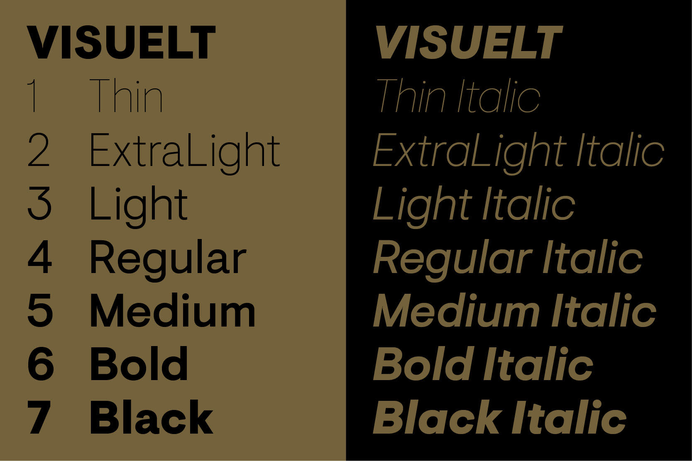
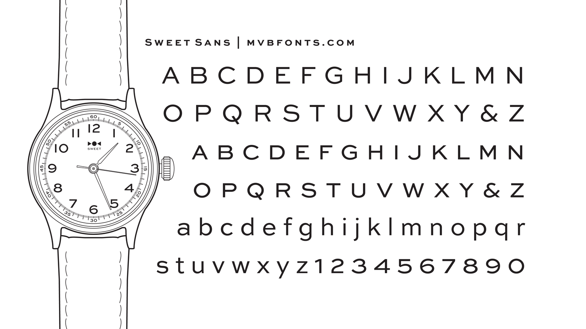

10 кращих шрифтів, які будуть популярні в дизайнерів у 2020 році
Тут зібрані шрифти від деяких найбільших світових лідерів в типографіці, хоча ви також знайдете кілька варіантів від незалежних розробників. Подивіться та скажіть чи згодні ви з нашими прогнозами.
1. Ambit
Ambit CoType Foundry - це ексцентричний і унікальний шрифт без зарубок, натхненний ранніми гротесками, але адаптований для сучасного використання. Тож не дивно, що ми бачили як він використовується для брендингу, упаковки та редакційних проектів, як друкованих, так і онлайн.
2. Helvetica Now
Після великого запуску в квітні Helvetica Now by Monotype , безсумнівно, стане переможцем 2019 року. Але давайте будемо чесними - це завжди буде користуватися попитом. І ми бачимо, що його популярність збережеться і в наступному році. Повний редизайн класичної Helvetica, це шрифт для 21-го століття з кожною переробленою і перемалюваною буквою.
3. Avenir Next Pro
4. Plantin
Цей шрифт в старому стилі, названий на честь принтера 16-го століття, Крістофа Плантена, був створений в 1913 році Британською корпорацією для системи набору гарячого металу. Основний текст в Plantin має багату текстуру і ідеально підходить для редакційних або книжкових дизайнів - хоча він відмінно працює і на екранах. В останні місяці ми бачили, що Плантен повертається в минуле, і його зростаюча популярність не показує ніяких ознак уповільнення.
5. Futura PT
Новий погляд Paratype на Futura є скрізь. Розроблений для компанії Bauer в 1927 році Полом Реннером, легко зрозуміти, чому система уніфікованих шрифтів виявилася такою популярною серед наших студентів-дизайнерів. Він складається з семи ваг з відповідними нахилами і восьми стиснутих стилів, всі з яких скоординовані у вигляді букв, метрик і ваг, тому вони краще працюють разом.
6. Untitled Sans
Untitled Sans - це простий неогротескний сан, заснований на ідеях Джаспера Моррісона і проекту Super Normal Наото Фукасави. Протягом 2019 роки ми бачили, що це спливало у багатьох студентських проектах. Ми можемо тільки подякувати Моррісона і Фукасава за те, що вони втілили цей блискучий шрифт в життя.
11. FF Meta
Розроблений Еріком Шпікерманом, FF Meta брав участь в декількох проектах в Шіллінгтоне протягом 2019 року. Сімейство шрифтів Humanis Sans Serif було випущено в 1991 році і призначалася для того, щоб стати «повною протилежністю Helvetica», яку він вважав «нудною і м'якою». Він завжди був на нашому радарі, але було цікаво побачити його в якості одного з найвидатніших шрифтів цього року.
7. TT Norms Pro
TT Norms Pro визнаний найбільш продаваним сучасним геометричним шрифтом і має 22 стилі - 11 вертикальних, 11 курсивов - і два змінних шрифтів, що дають необмежені можливості. Це надійна робоча конячка, яка, безсумнівно, буде в кожному інструменті розробника в 2020 році.
8. Visuelt
Створений як замовний шрифт для Visuelt, конференції по дизайну в Осло, цей шрифт Колофона породив «більш продуману і обмежену версію» Aperçu. Colophon переглянув і повторно відвідав шрифт і справив додаткові ваги - найлегший з яких має тонкі, точні криві. Зрозуміло, що це кращий вибір для наших студентів.
9. Sentinel

Якщо ви коли-небудь хотіли, щоб у Clarendons був курсив або щоб ваш улюблений шрифт із зарубками мав трохи більше ваги і міг добре виглядати в невеликому тексті, то Sentinel від Hoefler & Co - ідеальний шрифт для вас. І це сучасний шрифт із зарубками, якому приділяється велика увага в нашому суспільстві дизайнерів.
10. Sweet Sans
Марк ван Бронкхорст розробив Sweet Sans як данину без зарубок гравера. Це сімейство, засноване на шаблонах букв, званих «майстер-тарілками», але оновлених для сучасного використання. Не дивно, що в 2019 році це справило велике враження, і ми думаємо, що воно залишиться бестселером протягом наступних 12 місяців.